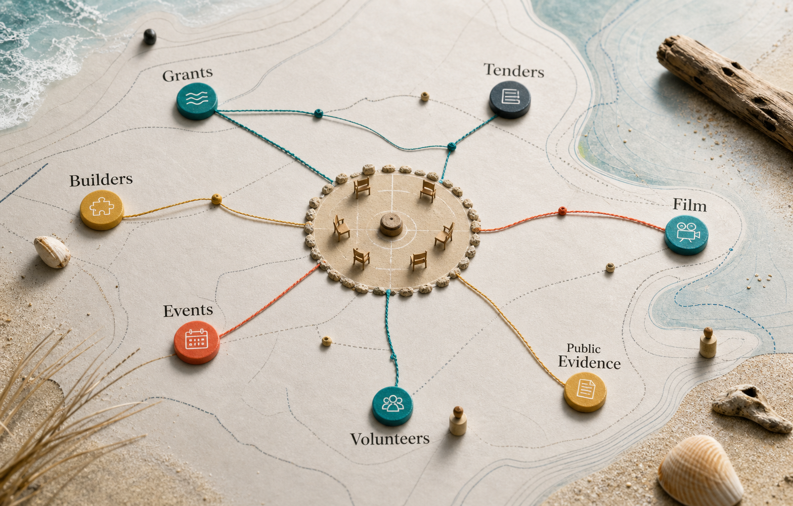

The club is one node, not the whole map.
Grants, tenders, film builders and documentary tools become useful when they orbit a grounded care and wellbeing system rather than overloading it.
Funding, procurement, capability and story are different doors.
The centre is participation, care and wellbeing. Grants can fund public benefit, tenders can support delivery, and maker-space, co-op, Sandworm and media systems can add capability or evidence. The useful question is which door helps the club serve people better.
Ballow Road Sand and Screen Hub
Speculative sand, screen and logistics context, kept separate from the club shell and not treated as a confirmed facility or club asset.
Dunwich Ferry Terminal Open Data Lab
Gateway evidence, access, movement and public-source context for Dunwich planning conversations.
Stradbroke Grants Lab
Grant programs, watchlists, project profiles and evidence habits for funding-ready community work.
Straddie Tenders Lab
Procurement pathways, bid readiness and official-source tender scanning kept separate from grants.
Straddie Vitality Network Builders
Wellbeing, venue checks, public/private settings and health-access notes for a softer community entry point.
Straddie Noticeboard Network
Dated public notices, corrections, local updates and one-message-many-screens patterns.
Quandamooka Film Festival draft doorway
Human-led story planning, AI storyboarding patterns, submission readiness and boundary notes.
Film Club Documentary Builders
Markdown builders for film profiles, source trails, interviews, scenes, run sheets and handoffs.
Straddie Content Assets Kit
Business profiles, film club notes, shared assets and upgrade roadmaps for local media work.
Amity Outdoor Fitness
A site-specific grant concept that can inform the club model without swallowing it.
Straddie Maker-Space Lab
Repair, reuse, compact tools and practical learning that could support gear, skills and local capability.
Straddie Digital Twin Builders
Site-reading and public-evidence patterns for testing place ideas before claiming certainty.
Ready S.E.T. Co-op Trust Hub
Local help, training, trust, practical support and community capability kept separate from the club shell.
Minjerribah Screen & Media Network
A staged public collaboration proposal linking stories, skills, screens and trusted local information on Minjerribah.
Sandworm Subterranean Systems
Long-range infrastructure and materials imagination that belongs behind review gates, not premature claims.
Relationship is not endorsement. Context is not approval. A map is not a mandate.